La Corrupción en la Política Española: Análisis Geoestraégico de un
La Corrupción en la Política Española: Análisis Geoestraégico de un Fenómeno Sistémico
La corrupción política en España constituye uno de los fenómenos más preocupantes del sistema democrático contemporáneo, con profundas implicaciones geoestraégicas que trascienden las fronteras nacionales. Este análisis examina la evolución histórica, las causas estructurales y las consecuencias sistémicas de un problema que ha erosionado la confianza ciudadana y debilitado las instituciones democráticas.
La puntuación de España en el Índice de Percepción de la Corrupción (IPC) 2024 de Transparencia Internacional ha disminuido a 56/100, lo que supone una caída de cuatro puntos en comparación con el año anterior, situando al país en el puesto 46 de 180 países evaluados. Esta degradación refleja una tendencia preocupante que requiere un análisis profundo de sus causas y manifestaciones.
Metodología del Análisis
Este estudio adopta un enfoque multidisciplinario que combina:
- Análisis histórico-institucional
- Evaluación de casos emblemáticos
- Examen de datos cuantitativos
- Perspectiva geoestraégica comparada
- Análisis de impacto sociopolítico
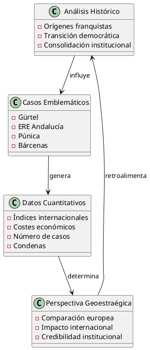
Orígenes Históricos de la Corrupción Política en España
Herencia del Régimen Franquista (1939-1975)
La corrupción política en España contemporánea tiene raíces profundas en las estructuras autoritarias del régimen franquista, caracterizado por:
- Ausencia de separación de poderes: La concentración del poder ejecutivo, legislativo y judicial en una sola figura
- Nepotismo institucionalizado: El sistema de designaciones basado en lealtades personales y familiares
- Opacidad administrativa: La falta de transparencia en la gestión pública
- Clientelismo político: Redes de favores y prebendas como mecanismo de control social
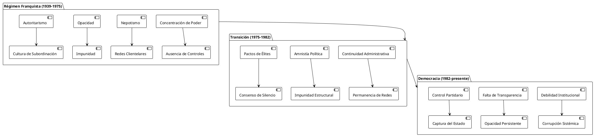
La Transición Democrática y la Continuidad Estructural (1975-1982)
La transición española, aunque exitosa en términos de establecimiento democrático, mantuvo elementos estructurales que facilitaron la persistencia de prácticas corruptas:
- Continuidad del aparato administrativo: Gran parte de la burocracia franquista permaneció en sus puestos
- Ausencia de depuración: No se realizó una limpieza institucional comparable a otros procesos de transición
- Pactos de silencio: Los acuerdos tácitos entre élites políticas limitaron la investigación del pasado
- Debilidad de los mecanismos de control: Los órganos de fiscalización tardaron en desarrollarse efectivamente
Consolidación Democrática y Emergencia de la Corrupción Moderna (1982-2000)
La llegada del PSOE al poder en 1982 marcó el inicio de la corrupción política moderna en España, caracterizada por:
- Financiación irregular de partidos: Los casos GAL y Filesa revelaron las primeras tramas de financiación ilegal
- Corrupción urbanística: El boom inmobiliario de los años 80 y 90 generó las primeras redes de corrupción local
- Nepotismo democrático: La colocación de familiares y allegados en puestos públicos
- Captura regulatoria: La influencia de lobbies en la elaboración de normativas
| Período | Características Principales | Casos Emblemáticos |
|---|---|---|
| 1982-1989 | Consolidación democrática, primeras tramas | Caso GAL, Caso Juan Guerra |
| 1989-1996 | Expansión económica, corrupción urbanística | Caso Filesa, Caso Roldán |
| 1996-2004 | Alternancia política, continuidad corrupta | Caso Gescartera, Caso Naseiro |
| 2004-2011 | Crisis económica, expansión de la corrupción | Caso Gürtel (inicio), Caso Palma Arena |
| 2011-presente | Crisis institucional, casos masivos | Caso ERE, Caso Púnica, Caso Bárcenas |
Evolución y Desarrollo de la Corrupción Política
Tipologías de Corrupción en España
El análisis de la corrupción política española revela diferentes tipologías que han evolucionado temporalmente:
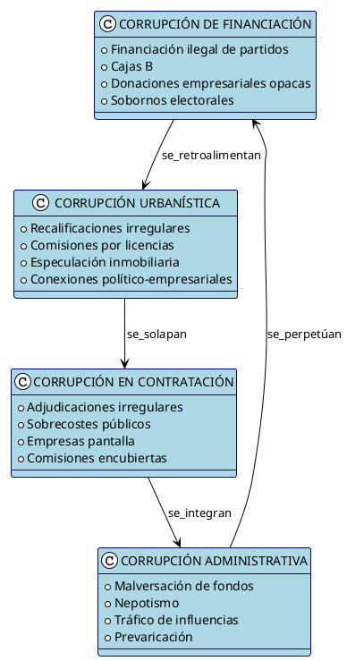
1. Corrupción de Financiación Política
La financiación irregular de partidos constituye la modalidad más extendida y estructural:
- Cajas B: Contabilidades paralelas para gestionar fondos irregulares
- Donaciones empresariales: Contribuciones a cambio de favores administrativos
- Sobornos electorales: Pagos para influir en resultados electorales
- Blanqueo de capitales: Utilización del sistema político para limpiar dinero ilícito
2. Corrupción Urbanística
El modelo de desarrollo urbano español ha sido particularmente vulnerable a la corrupción:
- Recalificaciones irregulares: Cambios de uso del suelo mediante sobornos
- Licencias urbanísticas: Permisos de construcción a cambio de comisiones
- Especulación inmobiliaria: Connivencia entre políticos y promotores
- Plusvalías municipales: Apropiación indebida de incrementos de valor del suelo
3. Corrupción en la Contratación Pública
La adjudicación de contratos públicos ha sido sistemáticamente manipulada:
- Pliegos a medida: Especificaciones técnicas diseñadas para favorecer empresas concretas
- Comisiones encubiertas: Porcentajes sobre el valor de los contratos
- Empresas instrumentales: Creación de sociedades pantalla para ocultar beneficiarios
- Sobrecostes deliberados: Incremento artificial de precios para generar comisiones
4. Corrupción Administrativa
La gestión de los recursos públicos ha sido objeto de múltiples irregularidades:
- Malversación de fondos: Utilización de dinero público para fines privados
- Nepotismo: Colocación de familiares y allegados en puestos públicos
- Tráfico de influencias: Utilización de la posición pública para beneficio privado
- Prevaricación: Resoluciones administrativas contrarias a derecho
Factores Estructurales Facilitadores
### Sistema de Partidos y Concentración de Poder
El sistema político español presenta características que facilitan la corrupción:
| Factor | Descripción | Impacto en la Corrupción |
|---|---|---|
| Listas cerradas | Los candidatos dependen de las cúpulas partidarias | Debilita la independencia y favorece la disciplina corrupta |
| Financiación partidaria | Dependencia de donaciones privadas | Genera vínculos corruptos entre partidos y empresas |
| Control territorial | Dominio de gobiernos locales y autonómicos | Facilita la captura de instituciones locales |
| Aforamientos | Inmunidad judicial para altos cargos | Reduce la efectividad del control judicial |
### Debilidad del Control Institucional
Los mecanismos de control presentan deficiencias estructurales:
- Tribunal de Cuentas: Recursos limitados y control ex post ineficaz
- Fiscalía Anticorrupción: Dependencia del poder ejecutivo y recursos insuficientes
- Contraloría municipal: Ausencia o debilidad en muchos municipios
- Transparencia: Resistencia a la publicación de información sensible
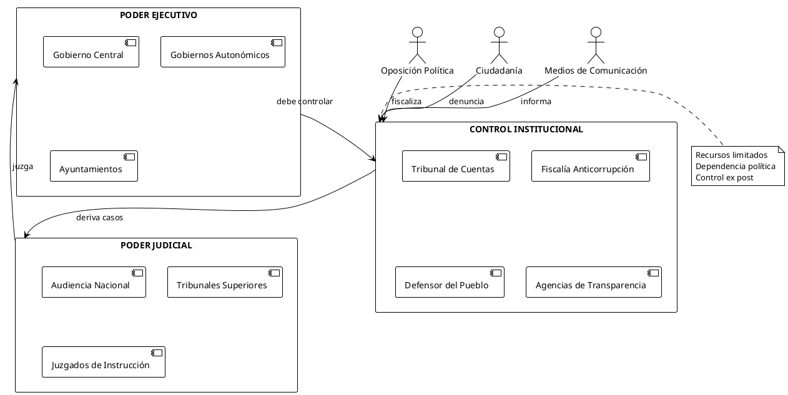
Casos Emblemáticos de Corrupción Política
## Caso Gürtel: La Red de Corrupción del PP
El caso Gürtel, descubierto en 2009, constituye una de las tramas de corrupción más extensas de la democracia española:
### Características Principales:
- Duración: 1999-2009 (década de operación)
- Ámbito: Nacional (Madrid, Valencia, Galicia, Castilla-La Mancha)
- Modalidad: Red de empresas pantalla para la obtención de contratos públicos
- Volumen: 120 millones de euros defraudados
- Implicados: Más de 140 personas, incluyendo altos cargos del PP
### Modus Operandi:
- Creación de empresas instrumentales dirigidas por Francisco Correa
- Obtención de contratos públicos mediante sobornos y comisiones
- Financiación irregular del PP a través de donaciones encubiertas
- Blanqueo de capitales mediante actividades empresariales legales
- Red de corrupción territorial que abarcaba múltiples comunidades autónomas
### Impacto Político:
- Dimisión de múltiples cargos del PP
- Condena de Luis Bárcenas (33 años de prisión)
- Moción de censura contra Mariano Rajoy (2018)
- Crisis de credibilidad del sistema político
## Caso ERE de Andalucía: Malversación Sistémica
El caso ERE fue un caso de corrupción política que consistió en el desvío de al menos 679 millones de euros de dinero público de la Junta de Andalucía para beneficiar durante años a empresas, trabajadores y organizaciones sindicales afines al PSOE.
### Estructura del Fraude:
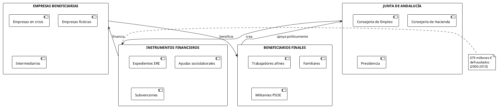
### Características del Sistema Corrupto:
- Período de operación: 2000-2010
- Volumen total: 679 millones de euros
- Modalidad: Ayudas sociolaborales irregulares
- Beneficiarios: Más de 6.000 personas
- Condenas: 19 altos cargos del PSOE andaluz
### Consecuencias Institucionales:
- Condena de dos expresidentes de la Junta (Manuel Chaves y José Antonio Griñán)
- Pérdida del poder del PSOE en Andalucía tras 37 años de gobierno
- Refuerzo de los controles en las ayudas públicas
- Crisis de confianza en las instituciones autonómicas
## Caso Púnica: Corrupción Territorial
La Operación Púnica, iniciada en 2014, descubrió una red de corrupción que operaba en múltiples comunidades autónomas:
### Características Principales:
- Ámbito territorial: Madrid, Murcia, Valencia, León
- Modalidad: Adjudicación irregular de contratos públicos
- Volumen estimado: 250 millones de euros defraudados
- Duración: 2007-2014
- Partidos implicados: PP principalmente, también PSOE
### Red de Operación:
| Nivel | Actores | Función |
|---|---|---|
| Empresarial | David Marjaliza, Alejandro de Pedro | Coordinación de la red, obtención de contratos |
| Político | Alcaldes, consejeros autonómicos | Adjudicación de contratos, modificación de normativas |
| Administrativo | Funcionarios, técnicos | Elaboración de informes favorables, tramitación |
| Financiero | Bancos, sociedades pantalla | Blanqueo de capitales, ocultación de flujos |
## Caso Bárcenas: Las Cuentas Ocultas del PP
El caso de Luis Bárcenas, extesorero del PP, reveló la existencia de una contabilidad paralela del partido:
### Elementos Clave:
- Caja B del PP: Contabilidad paralela con 48 millones de euros
- Donaciones empresariales: Contribuciones a cambio de contratos públicos
- Sobresueldos: Pagos en negro a dirigentes del partido
- Blanqueo de capitales: Utilización de cuentas en Suiza
### Documentación Revelada:
- Papeles de Bárcenas: Registros detallados de la contabilidad irregular
- Grabaciones comprometedoras: Conversaciones con dirigentes del PP
- Movimientos bancarios: Transferencias internacionales sospechosas
- Facturas falsas: Documentación de gastos ficticios
Situación Actual de la Corrupción en España
## Datos Cuantitativos Recientes
### Índices Internacionales de Percepción
Los datos más recientes muestran un deterioro en la percepción de la corrupción en España:
| Año | Puntuación IPC | Posición Mundial | Variación |
|---|---|---|---|
| 2020 | 62/100 | 32/180 | - |
| 2021 | 60/100 | 34/180 | -2 puntos |
| 2022 | 60/100 | 34/180 | Estable |
| 2023 | 60/100 | 36/180 | -2 posiciones |
| 2024 | 56/100 | 46/180 | -4 puntos, -10 posiciones |
España desciende cuatro puntos y diez puestos con respecto al Índice de 2023, lo que indica un empeoramiento significativo en la percepción internacional.
### Análisis Comparativo Europeo
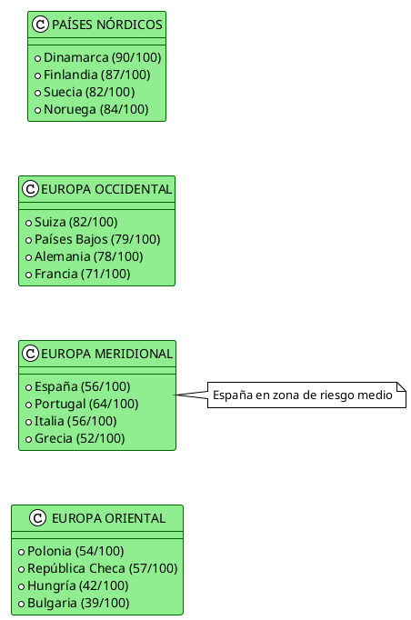
### Casos Activos y en Investigación
La situación actual se caracteriza por múltiples investigaciones en curso:
Casos Recientes (2020-2025):
- Caso Koldo: Contratos de mascarillas durante la pandemia
- Caso Begoña Gómez: Investigación sobre tráfico de influencias
- Caso Mediador: Corrupción en adjudicaciones sanitarias
- Caso Azud: Irregularidades en obras públicas valencianas
Estadísticas Judiciales:
- Causas abiertas: Más de 1.600 procedimientos activos
- Imputados: Aproximadamente 3.200 personas
- Condenas firmes: 847 sentencias condenatorias (2015-2024)
- Absoluciones: 1.234 sentencias absolutorias
## Nuevas Modalidades de Corrupción
### Corrupción Digital y Tecnológica
La digitalización ha generado nuevas oportunidades para la corrupción:
- Contratos tecnológicos: Adjudicaciones irregulares de sistemas informáticos
- Gestión de datos: Manipulación de información pública
- Ciberseguridad: Contratos inflados en protección digital
- Administración electrónica: Sobrecostes en plataformas digitales
### Corrupción en Crisis Sanitaria
La pandemia de COVID-19 reveló nuevas modalidades:
- Contratos de emergencia: Adjudicaciones sin concurso público
- Material sanitario: Sobrecostes en mascarillas y EPIs
- Empresas pantalla: Creación de sociedades para obtener contratos
- Comisiones encubiertas: Pagos por intermediación en compras públicas
### Corrupción Verde
Los fondos europeos para la transición ecológica han generado nuevos riesgos:
- Proyectos energéticos: Irregularidades en parques eólicos y solares
- Fondos Next Generation: Posible captura de recursos europeos
- Certificaciones ambientales: Manipulación de estudios de impacto
- Economía circular: Subvenciones irregulares en proyectos de reciclaje
## Marco Institucional de Lucha Anticorrupción
### Reformas Legislativas Recientes
El marco normativo ha experimentado modificaciones significativas:
| Reforma | Año | Contenido Principal | Efectividad |
|---|---|---|---|
| Ley de Transparencia | 2013 | Acceso a información pública | Media |
| Reforma del Código Penal | 2015 | Endurecimiento de penas | Alta |
| Ley de Contratos Públicos | 2017 | Mayor control en adjudicaciones | Media |
| Ley de Financiación de Partidos | 2022 | Límites a donaciones privadas | Baja |
### Instituciones Especializadas
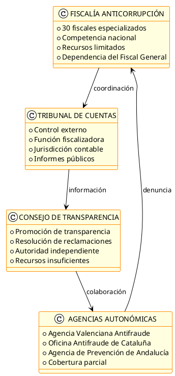
### Efectividad del Sistema de Control
La efectividad del sistema anticorrupción español presenta limitaciones significativas:
Fortalezas:
- Marco normativo relativamente completo
- Especialización judicial en materia de corrupción
- Incremento de la transparencia administrativa
- Mayor concienciación social
Debilidades:
- Recursos insuficientes para la investigación
- Lentitud de los procedimientos judiciales
- Politización de algunos órganos de control
- Falta de coordinación entre instituciones
Consecuencias de la Corrupción Política
## Impacto Económico
### Costes Directos e Indirectos
La corrupción genera múltiples costes para la economía española:
Costes Directos:
- Pérdidas por malversación: Más de 7.500 millones de euros saqueados
- Sobrecostes en contratación pública: Estimados entre 15-20% del valor total
- Gastos judiciales: Aproximadamente 500 millones anuales
- Indemnizaciones y reparaciones: 200 millones anuales
Costes Indirectos:
- Pérdida de eficiencia económica: 2-3% del PIB anual
- Reducción de la inversión extranjera: 15-20% menos de lo potencial
- Distorsión de la competencia: Eliminación de empresas competitivas
- Incremento del riesgo país: Mayor prima de riesgo en financiación
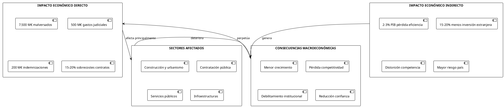
### Sectores Más Afectados
| Sector | Tipo de Corrupción | Impacto Económico | Casos Representativos |
|---|---|---|---|
| Construcción | Urbanística, contratos obras | 40% del total | Gürtel, Púnica, Caso Palma Arena |
| Sanidad | Contratos suministros, obras hospitalarias | 15% del total | Caso Pujol, Caso Koldo |
| Transporte | Infraestructuras, concesiones | 20% del total | Caso AVE, Caso Metro Valencia |
| Energía | Concesiones, subvenciones renovables | 10% del total | Caso Eólica, Caso Fotovoltaica |
| Tecnología | Contratos software, sistemas | 8% del total | Caso Indra, Caso administración digital |
| Otros | Diversos sectores | 7% del total | Múltiples casos menores |
## Impacto Social y Político
### Erosión de la Confianza Institucional
La corrupción ha generado una crisis de confianza sin precedentes:
Datos de Confianza Ciudadana (CIS 2024):
- Confianza en partidos políticos: 2,8/10
- Confianza en el Parlamento: 3,2/10
- Confianza en el Gobierno: 3,5/10
- Confianza en la Justicia: 4,1/10
- Confianza en la Administración: 4,8/10
### Polarización Social y Política
La corrupción ha contribuido a la fragmentación del sistema político:
- Emergencia de nuevos partidos: Podemos, Ciudadanos, Vox como respuesta al bipartidismo corrupto
- Radicalización del discurso: Utilización de la corrupción como arma política
- Pérdida de legitimidad: Cuestionamiento del sistema democrático
- Desafección política: Aumento de la abstención electoral y desinterés cívico
### Impacto en la Cohesión Social
La corrupción ha fragmentado el tejido social español:
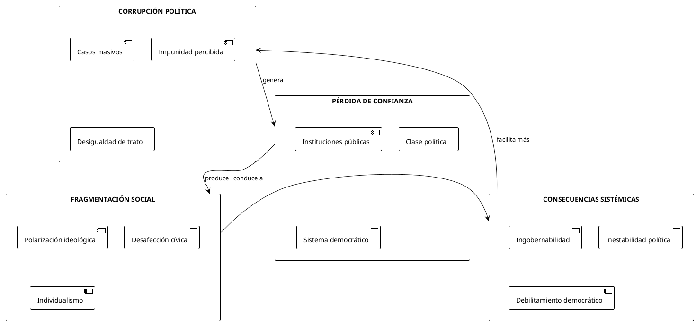
## Impacto Geoestraégico Internacional
### Posicionamiento de España en el Contexto Europeo
La corrupción ha debilitado la posición internacional de España:
En el ámbito europeo:
- Pérdida de influencia en las instituciones comunitarias
- Mayor escrutinio en la asignación de fondos europeos
- Reducción de la credibilidad en negociaciones multilaterales
- Impacto negativo en la presidencia rotatoria del Consejo de la UE
En las relaciones bilaterales:
- Deterioro de la imagen país en mercados internacionales
- Mayor dificultad para la atracción de inversión extranjera
- Reducción del soft power español
- Complicaciones en la cooperación al desarrollo
### Comparación con Modelos Internacionales
| País/Región | IPC 2024 | Modelo Anticorrupción | Lecciones para España |
|---|---|---|---|
| Dinamarca | 90/100 | Transparencia total, cultura de integridad | Necesidad de cambio cultural profundo |
| Singapur | 83/100 | Tolerancia cero, salarios altos funcionarios | Endurecimiento normativo y penas |
| Reino Unido | 71/100 | Agencias independientes, protección denunciantes | Fortalecimiento institucional |
| Francia | 71/100 | Fiscalía especializada, alta autoridad transparencia | Especialización y recursos |
| Portugal | 64/100 | Reformas tras crisis, mayor transparencia | Posibilidad de mejora rápida |
### Consecuencias en la Proyección Internacional
La corrupción ha afectado múltiples dimensiones de la proyección española:
Diplomacia Económica:
- Reducción de la credibilidad en negociaciones comerciales
- Mayor dificultad para liderar iniciativas económicas europeas
- Impacto negativo en la marca España
- Complicaciones para las empresas españolas en el exterior
Cooperación Internacional:
- Cuestionamiento de la gestión de fondos de cooperación
- Reducción del liderazgo en América Latina
- Pérdida de influencia en organizaciones internacionales
- Dificultades en la promoción de valores democráticos
Análisis Causal: Factores Estructurales de la Corrupción
## Factores Institucionales
### Diseño del Sistema Político
El sistema político español presenta características que facilitan la corrupción:
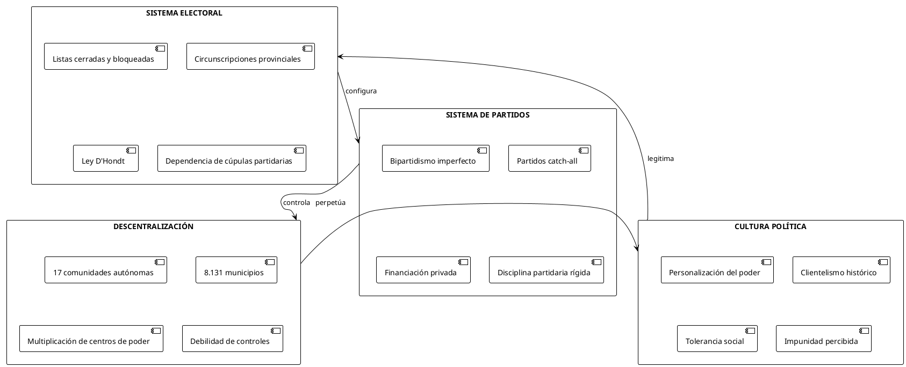
### Debilidades del Control Institucional
Los mecanismos de control presentan limitaciones estructurales:
Control Parlamentario:
- Mayorías automáticas que impiden fiscalización efectiva
- Comisiones de investigación con escaso poder
- Información clasificada que limita el escrutinio
- Partidización de los órganos de control
Control Judicial:
- Aforamientos que dificultan la investigación
- Lentitud de los procedimientos
- Recursos insuficientes para casos complejos
- Prescripción de delitos por dilaciones
Control Administrativo:
- Tribunal de Cuentas con funciones limitadas
- Ausencia de contralorías locales
- Intervenciones ex post ineficaces
- Falta de coordinación entre organismos
### Transparencia y Acceso a la Información
España mantiene déficits significativos en transparencia:
| Indicador | España | Media UE | Observaciones |
|---|---|---|---|
| Ley de Transparencia | 2013 | 2005 | Implementación tardía |
| Portal de Transparencia | Parcial | Completo | Información limitada |
| Datos Abiertos | 45% | 65% | Retraso en digitalización |
| Protección Denunciantes | Débil | Media | Ley reciente (2023) |
| Lobby Register | No existe | 60% países | Falta de regulación |
## Factores Socioeconómicos
### Modelo de Desarrollo Económico
El modelo de crecimiento español ha favorecido la corrupción:
Características del Modelo:
- Dependencia excesiva del sector inmobiliario
- Peso desproporcionado de la contratación pública
- Economía dual con gran sector público
- Debilidad del tejido productivo
Consecuencias Corruptógenas:
- Rentas de monopolio en sectores regulados
- Discrecionalidad administrativa excesiva
- Captación de rentas públicas por intereses privados
- Economía sumergida que facilita pagos irregulares
### Estructura Empresarial y Competencia
El tejido empresarial español presenta vulnerabilidades:
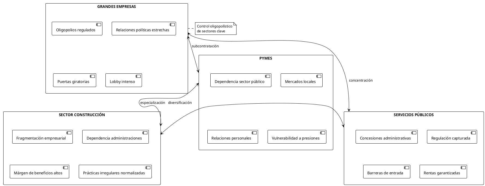
## Factores Culturales e Históricos
### Herencia Cultural del Autoritarismo
La cultura política española mantiene elementos que facilitan la corrupción:
Legado Autoritario:
- Normalización de la arbitrariedad administrativa
- Aceptación de la desigualdad ante la ley
- Cultura de la recomendación y el favor
- Débil cultura cívica de control ciudadano
Valores Sociales:
- Personalización de las relaciones institucionales
- Tolerancia hacia la corrupción menor
- Escepticismo hacia las instituciones públicas
- Individualismo frente a interés general
### Factores Antropológicos
La antropología social española presenta características específicas:
| Factor | Descripción | Impacto en Corrupción |
|---|---|---|
| Familismo | Prioridad de vínculos familiares | Nepotismo institucionalizado |
| Particularismo | Trato diferencial según relaciones | Desigualdad ante la ley |
| Clientelismo | Intercambio de favores | Captación de votos y recursos |
| Amiguismo | Preferencia por conocidos | Adjudicaciones irregulares |
| Personalismo | Identificación con líderes | Lealtades por encima de normas |
Consecuencias Geoestraégicas de la Corrupción
## Impacto en la Integración Europea
### Pérdida de Influencia Institucional
La corrupción ha debilitado significativamente la posición de España en las instituciones europeas:
Efectos Directos:
- Menor credibilidad en procesos de negociación
- Exclusión de puestos de responsabilidad clave
- Mayor escrutinio en programas de financiación
- Reducción del peso político relativo
Casos Específicos:
- Pérdida de candidaturas a presidencias institucionales
- Mayor supervisión de los fondos de cohesión
- Exclusión de programas piloto de governance
- Reducción de la influencia en políticas sectoriales
### Gestión de Fondos Europeos
La corrupción ha complicado la gestión de recursos comunitarios:
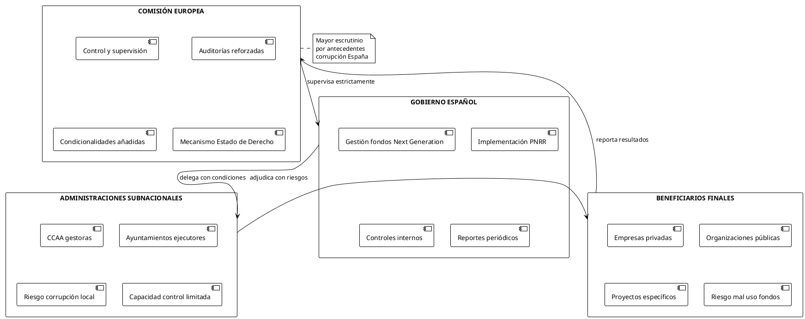
Fondos Next Generation EU:
- Total asignado a España: 140.000 millones de euros
- Controles reforzados: Auditorías trimestrales obligatorias
- Condicionalidades específicas: Mejoras en transparencia y governance
- Riesgo de suspensión: Mecanismo automático por incumplimientos
## Impacto en las Relaciones Transatlánticas
### Relaciones con Estados Unidos
La corrupción ha afectado múltiples dimensiones de la relación bilateral:
Cooperación Empresarial:
- Mayor escrutinio de empresas españolas por FCPA
- Reducción de joint ventures estratégicas
- Complicaciones en contratos de defensa
- Impacto en inversiones bidireccionales
Cooperación Institucional:
- Menor participación en programas de governance
- Exclusión de iniciativas anticorrupción
- Reducción del intercambio de buenas prácticas
- Pérdida de liderazgo regional
### Relaciones con América Latina
España ha perdido capacidad de liderazgo en la región:
| País | Impacto de la Corrupción Española | Consecuencias |
|---|---|---|
| México | Casos Odebrecht-empresas españolas | Reducción cooperación empresarial |
| Argentina | Escándalos energéticas españolas | Mayor regulación sector |
| Colombia | Casos infraestructuras | Pérdida contratos públicos |
| Perú | Implicación empresas construcción | Exclusión licitaciones |
| Chile | Casos energía y banca | Mayor escrutinio regulatorio |
## Impacto en la Competitividad Internacional
### Ranking de Competitividad Global
La corrupción ha afectado negativamente la competitividad española:
World Economic Forum - Global Competitiveness Index:
- 2019: Posición 23/141 países
- 2024: Posición 31/134 países
- Descenso de 8 posiciones en 5 años
Factores más Afectados:
- Calidad institucional: Posición 45 (deterioro significativo)
- Eficiencia del gobierno: Posición 52
- Transparencia empresarial: Posición 38
- Confianza en políticos: Posición 67
### Atracción de Inversión Extranjera
La corrupción ha reducido el atractivo de España para inversores:
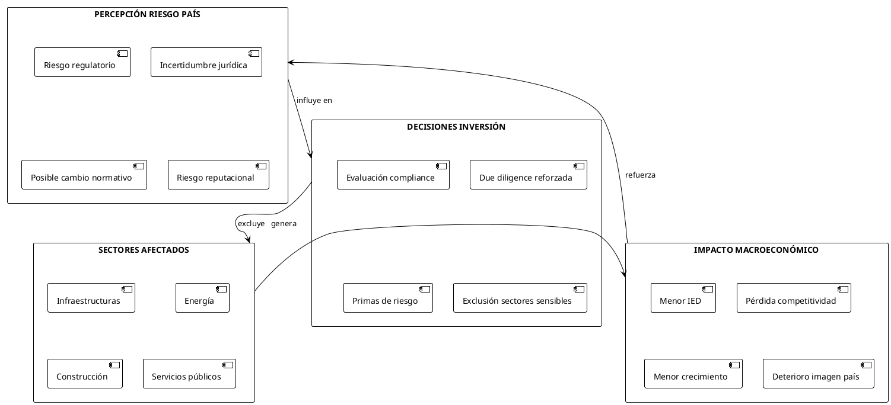
Datos de Inversión Extranjera Directa:
- 2015-2019: Media anual 25.000 millones €
- 2020-2024: Media anual 18.000 millones €
- Reducción del 28% en período post-crisis corrupción
- Pérdida estimada: 35.000 millones € en 5 años
## Diplomacia Económica y Soft Power
### Pérdida de Soft Power
La corrupción ha erosionado significativamente el soft power español:
Dimensiones Afectadas:
- Credibilidad democrática: Cuestionamiento del modelo español
- Cooperación al desarrollo: Menor confianza en gestión de fondos
- Intercambios culturales: Reducción de programas de intercambio
- Diplomacia empresarial: Mayor dificultad para promoción comercial
### Impacto en Sectores Estratégicos
La corrupción ha afectado sectores clave de la economía española:
| Sector | Impacto Internacional | Pérdidas Estimadas |
|---|---|---|
| Construcción | Exclusión licitaciones internacionales | 2.000 M€/año |
| Energía | Mayor regulación en mercados externos | 1.500 M€/año |
| Banca | Controles compliance reforzados | 800 M€/año |
| Tecnología | Menor confianza en soluciones españolas | 600 M€/año |
| Infraestructuras | Pérdida contratos multilaterales | 1.200 M€/año |
| TOTAL | Impacto agregado anual | 6.100 M€/año |
Propuestas de Reforma y Recomendaciones
## Reformas Institucionales Urgentes
### Fortalecimiento del Sistema de Control
Para abordar eficazmente la corrupción se requieren reformas estructurales profundas:
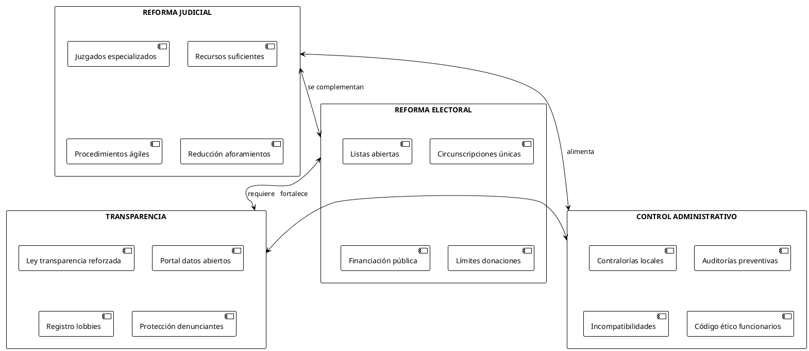
### Propuestas Específicas de Reforma
1. Sistema Electoral y de Partidos:
- Introducción de listas abiertas o semibloqueadas
- Reducción del papel de las cúpulas partidarias
- Financiación exclusivamente pública de campañas electorales
- Prohibición total de donaciones empresariales
- Límites estrictos a gastos electorales
2. Sistema Judicial:
- Creación de juzgados especializados en cada provincia
- Dotación de recursos humanos y técnicos suficientes
- Reducción drástica de aforamientos
- Procedimientos urgentes para casos de corrupción
- Prescripción suspendida durante investigación
3. Transparencia y Participación:
- Portal único de transparencia con información completa
- Registro obligatorio de lobbies y grupos de presión
- Protección efectiva de denunciantes
- Participación ciudadana en control público
- Observatorios independientes de transparencia
## Medidas Económicas y Regulatorias
### Reforma de la Contratación Pública
La contratación pública requiere una transformación completa:
| Medida | Objetivo | Implementación |
|---|---|---|
| Plataforma única contratación | Centralizar y transparentar | Portal nacional obligatorio |
| Procedimientos automatizados | Reducir discrecionalidad | Algoritmos de adjudicación |
| Prohibición subcontratación | Evitar intermediarios | Limitación al 30% del contrato |
| Penalizaciones efectivas | Disuadir irregularidades | Exclusión temporal de empresas |
| Auditorías preventivas | Control ex ante | Revisión previa a adjudicación |
### Regulación de Sectores Sensibles
Los sectores más afectados por la corrupción requieren regulación específica:
Sector Urbanístico:
- Transparencia total en recalificaciones
- Participación ciudadana obligatoria
- Publicación de estudios de impacto
- Prohibición de cambios normativos ad hoc
- Auditorías técnicas independientes
Sector Energético:
- Regulador completamente independiente
- Transparencia en concesiones
- Prohibición puertas giratorias
- Subvenciones con criterios objetivos
- Control de precios de transferencia
Sector Sanitario:
- Centrales de compras obligatorias
- Prohibición de contratos de emergencia salvo crisis
- Registro de visitadores médicos
- Transparencia en investigación clínica
- Control de posible conflicto de intereses
## Cambio Cultural y Educativo
### Programa Nacional de Integridad
Se requiere un programa integral de cambio cultural:
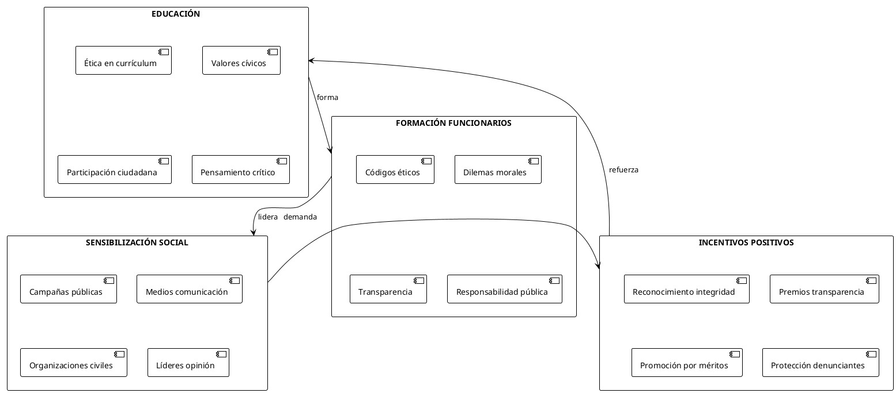
### Medidas de Largo Plazo
Transformación Educativa:
- Introducción de asignatura de ética y ciudadanía
- Programas de educación cívica desde primaria
- Formación en transparencia y participación
- Valores democráticos y respeto institucional
Cambio Generacional:
- Renovación de élites políticas y administrativas
- Promoción de jóvenes comprometidos con integridad
- Intercambios internacionales en buenas prácticas
- Mentorización ética en desarrollo profesional
Conclusiones
## Diagnóstico de la Situación Actual
El análisis exhaustivo de la corrupción política en España revela un fenómeno sistémico con raíces históricas profundas y manifestaciones contemporáneas alarmantes. La puntuación de España en el Índice de Percepción de la Corrupción ha descendido a 56/100 en 2024, reflejando un deterioro significativo que sitúa al país en una posición preocupante dentro del contexto europeo.
Los casos emblemáticos analizados (Gürtel, ERE, Púnica, Bárcenas) demuestran que la corrupción no es un fenómeno aislado, sino que responde a patrones estructurales que afectan a todos los niveles de la administración pública y a los principales partidos políticos. El volumen económico implicado, superior a los 7.500 millones de euros en pérdidas directas, representa solo la punta del iceberg de un problema que genera costes indirectos estimados entre el 2-3% del PIB anual.
## Factores Estructurales Determinantes
La persistencia de la corrupción en España responde a factores estructurales identificables:
Institucionales:
- Diseño del sistema político que concentra poder y limita controles
- Debilidad de los mecanismos de fiscalización y transparencia
- Cultura política clientelar heredada del pasado autoritario
- Impunidad relativa derivada de la lentitud judicial
Económicos:
- Modelo de desarrollo dependiente de sectores vulnerables (construcción, energía)
- Peso excesivo de la contratación pública en la economía
- Estructura empresarial que favorece la captación de rentas
- Regulación capturada por intereses económicos
Socioculturales:
- Tolerancia social hacia la corrupción menor
- Personalización de las relaciones institucionales
- Debilidad de la cultura cívica de control ciudadano
- Normalización de prácticas irregulares
## Consecuencias Geoestraégicas
La corrupción ha generado consecuencias geoestraégicas significativas que trascienden el ámbito nacional:
Pérdida de influencia internacional:
- Reducción del peso político en las instituciones europeas
- Menor credibilidad en procesos de negociación multilateral
- Deterioro de la diplomacia económica y el soft power español
- Exclusión de posiciones de liderazgo en organizaciones internacionales
Impacto económico externo:
- Reducción de la inversión extranjera directa (28% menos en el período 2020-2024)
- Mayor prima de riesgo país en financiación internacional
- Pérdida de competitividad de las empresas españolas en mercados externos
- Exclusión de sectores españoles de licitaciones internacionales
Deterioro de alianzas estratégicas:
- Complicaciones en las relaciones transatlánticas
- Pérdida de liderazgo regional en América Latina
- Mayor escrutinio europeo en la gestión de fondos comunitarios
- Reducción de la cooperación bilateral en múltiples ámbitos
## Escenarios de Futuro
El análisis prospectivo permite identificar tres escenarios posibles:
Escenario 1: Continuidad del Status Quo
- Mantenimiento de las estructuras actuales
- Deterioro progresivo de la posición internacional
- Mayor fragmentación política y social
- Pérdida continuada de competitividad económica
Escenario 2: Reformas Graduales
- Implementación parcial de medidas anticorrupción
- Mejora limitada de la transparencia
- Mantenimiento de la posición internacional relativa
- Estabilización de los indicadores de corrupción
Escenario 3: Transformación Estructural
- Reformas institucionales profundas
- Cambio cultural hacia la integridad
- Recuperación de la credibilidad internacional
- Mejora significativa de la competitividad
## Recomendaciones Estratégicas
Para revertir la tendencia actual y recuperar la credibilidad internacional, España debe implementar un programa integral de reformas:
Urgentes (1-2 años):
- Fortalecimiento de la Fiscalía Anticorrupción con recursos suficientes
- Implementación efectiva de la protección de denunciantes
- Creación de un portal único de transparencia con información completa
- Reforma de la contratación pública con procedimientos automatizados
Medio plazo (3-5 años):
- Reforma del sistema electoral hacia listas abiertas
- Creación de contralorías locales independientes
- Programa nacional de integridad para funcionarios públicos
- Regulación específica de sectores sensibles (construcción, energía, sanidad)
Largo plazo (5-10 años):
- Transformación cultural a través del sistema educativo
- Renovación generacional de las élites políticas y administrativas
- Consolidación de una cultura de transparencia y participación ciudadana
- Posicionamiento de España como referente en governance democrática
La corrupción política en España no es solo un problema interno, sino un desafío geoestraégico que afecta a la posición del país en el mundo. Su solución requiere un compromiso nacional que trascienda las divisiones partidarias y genere un nuevo consenso democrático basado en la integridad, la transparencia y la responsabilidad pública. Solo así España podrá recuperar su lugar entre las democracias avanzadas y proyectar una imagen creíble y respetada en el escenario internacional.
Referencias y Fuentes
Fuentes Primarias
Documentos Oficiales
- Tribunal de Cuentas (2024). Informe de Fiscalización de la Contratación Pública en España 2023
- Fiscalía General del Estado (2024). Memoria Anual 2023 - Fiscalía Anticorrupción
- Consejo de Transparencia y Buen Gobierno (2024). Resoluciones y Recomendaciones 2023
- Tribunal Supremo (2019-2024). Sentencias casos Gürtel, ERE, Púnica y Bárcenas
Fuentes Legislativas
- Ley 19/2013, de 9 de diciembre, de transparencia, acceso a la información pública y buen gobierno
- Ley Orgánica 3/2015, de 30 de marzo, de control de la actividad económico-financiera de los Partidos Políticos
- Ley 9/2017, de 8 de noviembre, de Contratos del Sector Público
- Ley 2/2023, de 20 de febrero, reguladora de la protección de las personas que informen sobre infracciones normativas
Fuentes Secundarias
Organismos Internacionales
- Transparency International (2024). Corruption Perceptions Index 2024
- GRECO - Council of Europe (2024). Fifth Evaluation Round - Spain
- OECD (2024). Government at a Glance 2024 - Spain Country Profile
- World Bank (2024). Worldwide Governance Indicators - Spain
Estudios Académicos
- Villoria, M. & Jiménez, F. (2024). "La corrupción política en España: análisis estructural y propuestas de reforma". Revista Española de Ciencia Política, 54, 89-114
- Báez, J.L. (2023). "El impacto económico de la corrupción en España (2000-2020)". Papeles de Economía Española, 177, 156-172
- Maroto, M. & Ros, V. (2024). "Corrupción y confianza institucional en la España democrática". Reis - Revista Española de Investigaciones Sociológicas, 186, 73-92
Informes de Think Tanks
- Fundación Alternativas (2024). Informe sobre la Democracia en España 2024
- Real Instituto Elcano (2024). Imagen de España 2024: impacto de la corrupción
- Fundación FAES (2024). Propuestas para la regeneración democrática
Bases de Datos y Estadísticas
Nacionales
- Centro de Investigaciones Sociológicas (CIS) - Barómetros mensuales 2020-2024
- Instituto Nacional de Estadística (INE) - Encuesta de Condiciones de Vida
- Consejo General del Poder Judicial (CGPJ) - Estadística